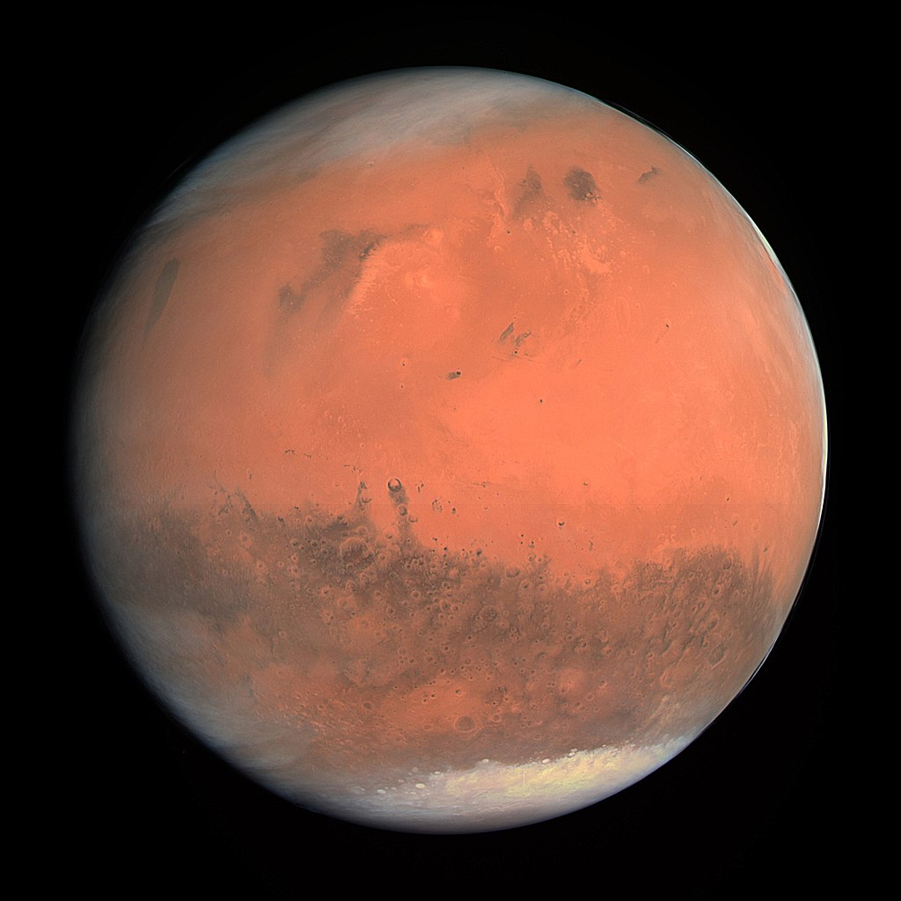

|
|
About us | Contact us | Gallery |
|---|
|
Mars is the fourth planet from the Sun and the second-smallest planet in the Solar System, being larger than only Mercury. In English, Mars carries the name of the Roman god of war and is often referred to as the "Red Planet".[17][18] The latter refers to the effect of the iron oxide prevalent on Mars's surface, which gives it a reddish appearance (as shown), that is distinctive among the astronomical bodies visible to the naked eye.[19] Mars is a terrestrial planet with a thin atmosphere, with surface features reminiscent of the impact craters of the Moon and the valleys, deserts and polar ice caps of Earth. The days and seasons are comparable to those of Earth, because the rotational period as well as the tilt of the rotational axis relative to the ecliptic plane are similar. Mars is the site of Olympus Mons, the largest volcano and highest known mountain on any planet in the Solar System, and of Valles Marineris, one of the largest canyons in the Solar System. The smooth Borealis basin in the Northern Hemisphere covers 40% of the planet and may be a giant impact feature.[20][21] Mars has two moons, Phobos and Deimos, which are small and irregularly shaped. These may be captured asteroids, similar to 5261 Eureka, a Mars trojan. In English, the planet is named after Mars, the Roman god of war,[53] an association made because of its red color, which suggests blood.[54] The adjectival form of Latin Mars is Martius,[55] from which the English word Martian derives, used as an adjective or for a putative inhabitant of Mars, and Martial, used as an adjective corresponding to Terrestrial for Earth.[56] In Greek, the planet is known as Ἄρης Arēs, with the inflectional stem Ἄρε- Are-.[57] That is because of the Greek equivalent to Mars is Ares. From this come technical terms such as areology, as well as the (rare) adjective Arean[58] and the star name Antares. Mars is also the basis of the name of the month of March (from Latin Martius mēnsis 'month of Mars'),[59] as well as of Tuesday (Latin dies Martis 'day of Mars'), where the old Anglo-Saxon god Tíw was identified as the Anglo-Saxon equivalent to Mars by Interpretatio germanica. |
 | |
|
Mars has been explored by several uncrewed spacecraft. Mariner 4 was the first spacecraft to visit Mars; launched by NASA on 28 November 1964, it made its closest approach to the planet on 15 July 1965. Mariner 4 detected the weak Martian radiation belt, measured at about 0.1% that of Earth, and captured the first images of another planet from deep space.[24] The Soviet Mars 3 mission included a lander, which achieved a soft landing in December 1971; however, contact was lost seconds after touchdown.[25] On 20 July 1976, Viking 1 performed the first successful landing on the Martian surface.[26] On 4 July 1997, the Mars Pathfinder spacecraft landed on Mars and on 5 July released its rover, Sojourner, the first robotic rover to operate on Mars.[27] The Mars Express orbiter, the first European Space Agency (ESA) spacecraft to visit Mars, arrived in orbit on 25 December 2003.[28] In January 2004, NASA's Mars Exploration Rovers, named Spirit and Opportunity, both landed on Mars; Spirit operated until 22 March 2010 and Opportunity lasted until 10 June 2018.[29] NASA landed its Curiosity rover on August 6, 2012, as a part of its Mars Science Laboratory (MSL) mission to investigate Martian climate and geology.[30] On 24 September 2014, the Indian Space Research Organisation (ISRO) became the fourth space agency to visit Mars when its maiden interplanetary mission, the Mars Orbiter Mission spacecraft, arrived in orbit.[31] The United Arab Emirates became the fifth to successfully undertake a mission to Mars, having inserted an orbiter into the Martian atmosphere on 9 February 2021.[32] China National Space Administration (CNSA)'s Tianwen-1 spacecraft arrived in Martian orbit on 10 February 2021.[33] NASA's Perseverance rover and Ingenuity helicopter successfully landed on Mars on 18 February 2021.[34] Ingenuity successfully completed the first powered controlled flight by an aircraft on any planet besides Earth on 19 April 2021, taking off vertically, hovering and landing on Mars.[35][36] On 14 May 2021, CNSA's Tianwen-1 lander and Zhurong rover successfully landed on Mars.[37] Zhurong rover was successfully deployed on 22 May 2021, which makes China the second country to successfully deploy a rover on Mars, after the United States. |
||